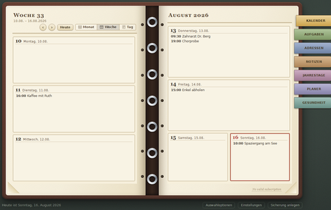

Linux
Flatpak · AppImage · DEB · RPM
Transferências oficiaisLinux · Windows · macOS Beta
Gratuito · Código aberto · Sem limites de utilização
O Magnolie Organizer reúne calendário, tarefas, contactos e notas numa interface inspirada numa agenda de papel. É gratuito, tem código aberto, guarda os dados localmente e oferece vinte idiomas. Para Linux, está disponível em Flatpak, AppImage, DEB e RPM, além da versão para Windows. Existe também uma versão beta para macOS, destinada a computadores Intel e Apple Silicon. Descubra uma forma familiar de organizar o dia.

Flatpak · AppImage · DEB · RPM
Transferências oficiaisWindows 10/11 · x64 · Installer / ZIP
Transferências oficiaisVersão beta para Intel e Apple Silicon. Algumas funcionalidades ainda estão em desenvolvimento.
Conheça a versão betaUma aplicação separada para notas e tarefas no Android, com troca opcional de dados com o Organizer em Linux e Windows.
F-Droid